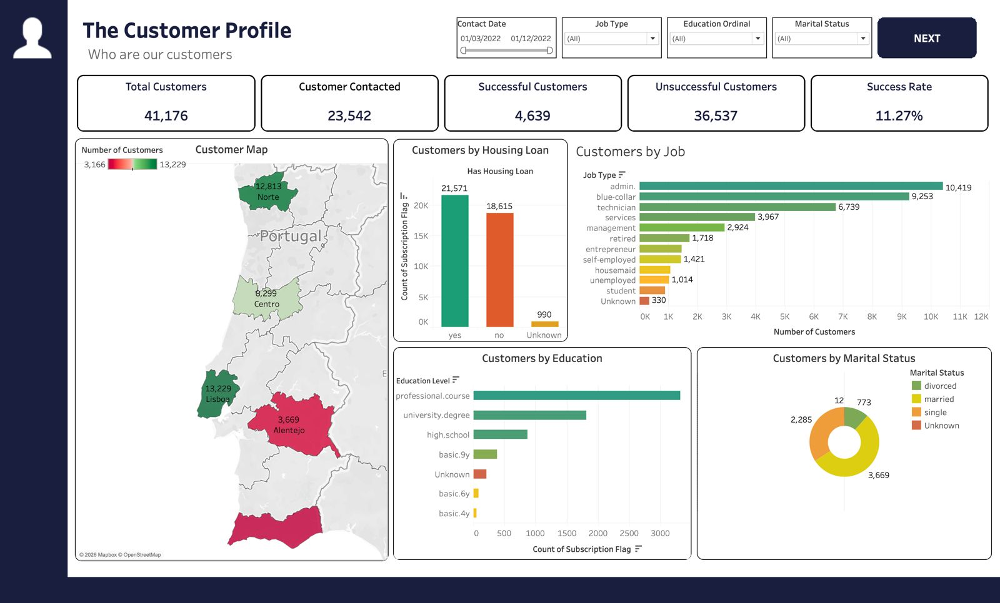
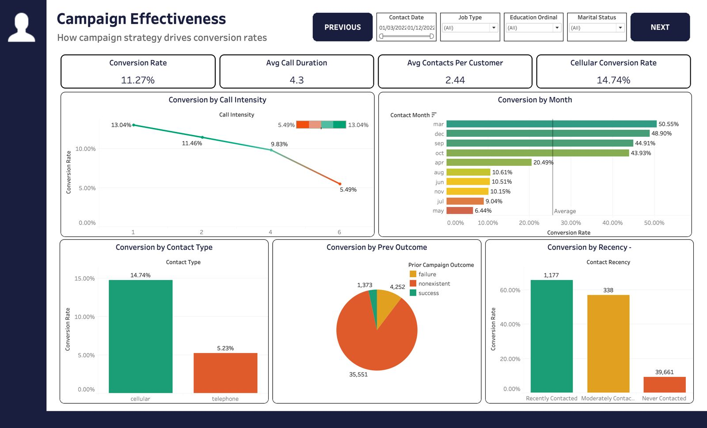
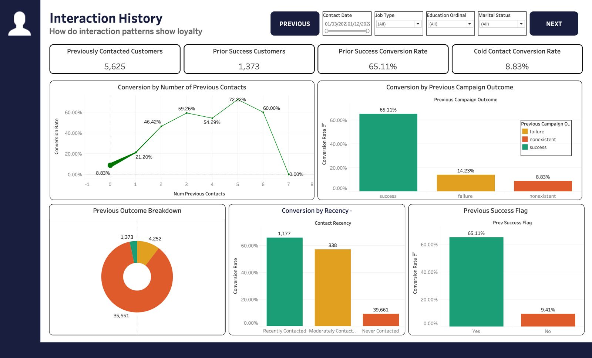
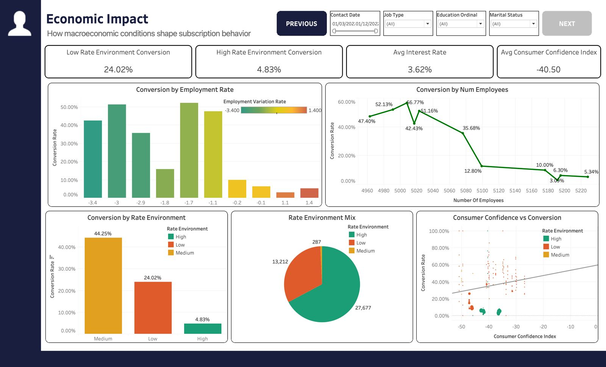

Cleaning
Standardized column names, removed 12 duplicate rows, converted yes/no subscription values into a binary flag, retained Unknown categories to avoid biased imputation, and capped campaign-contact outliers at 10.
Detailed Project Explanation
This project studies a Portuguese banking institution's direct marketing campaign data to understand what drives customers to subscribe to a term deposit. The analysis connects customer profile, call strategy, previous interaction history, and macroeconomic conditions to conversion performance.
What The Project Talks About
The project analyzes one row per customer contact from a term-deposit marketing campaign. The target variable is whether the customer subscribed after the campaign interaction.
The main business goal is to improve campaign targeting. Instead of contacting everyone the same way, the dashboard separates customers by job, education, marital status, loan profile, contact channel, previous campaign outcome, recency, and interest-rate environment.
Standardized column names, removed 12 duplicate rows, converted yes/no subscription values into a binary flag, retained Unknown categories to avoid biased imputation, and capped campaign-contact outliers at 10.
Created age group, call intensity, contacted-before flag, contact recency, rate environment, previous success flag, and education ordinal fields for analysis and Tableau sorting.
Used ANOVA and Chi-Square tests to check whether age group, job, contact intensity, contact type, prior success, and rate environment significantly affect subscription behavior.
Tableau Dashboard Showcase
The Tableau dashboards explain who the customers are, how campaign strategy affects conversion, whether previous interactions matter, and how economic conditions shape subscription behavior.




Key Insights
Prioritize customers with prior success, use cellular outreach where possible, avoid excessive repeated calls, build recency-based follow-up lists, and time campaigns more aggressively during favorable rate environments.
Call duration is useful for retrospective analysis but should not be used as a pre-call predictor because it is only known after the call. Unknown categories were retained, and macroeconomic variables are highly correlated, so they should be interpreted carefully.